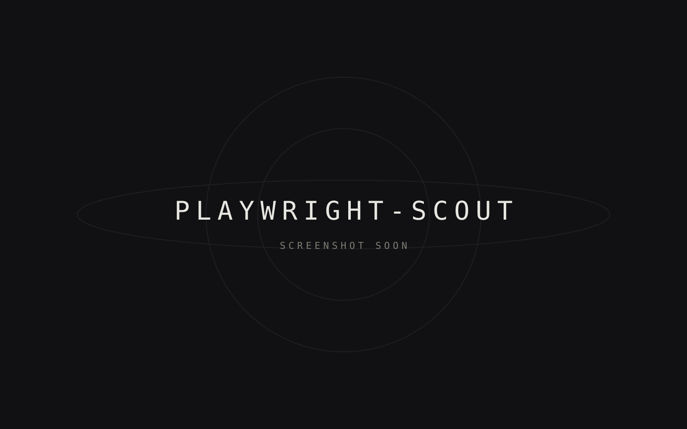

playwright-scout
A deterministic Playwright QA scout and AI-agent skill that crawls web apps and generates Playwright tests.

playwright-scout explores a web app on its own, then writes Playwright tests from what it found — usable directly or as a skill for AI coding agents.